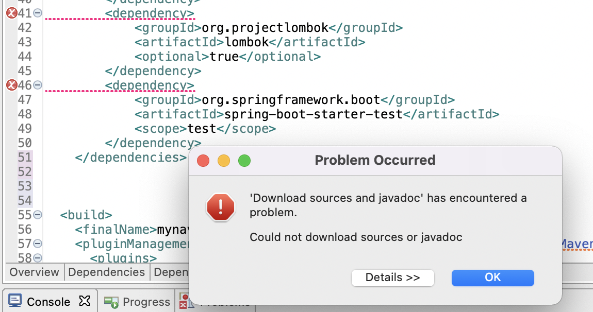
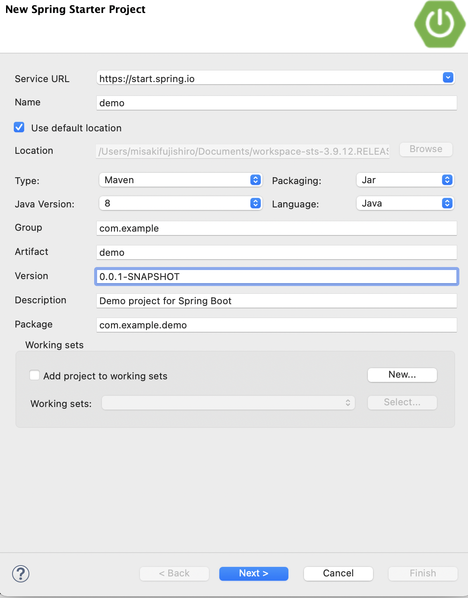
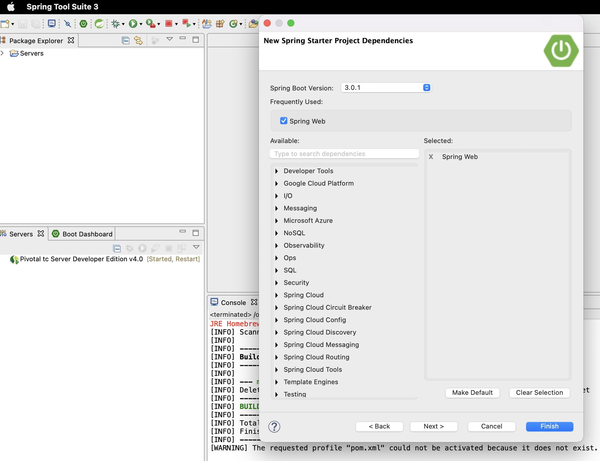
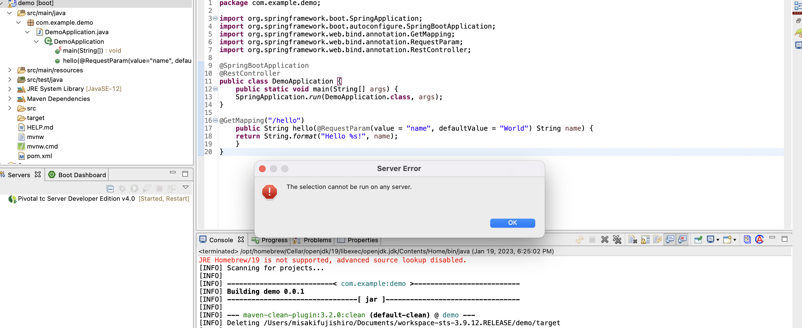
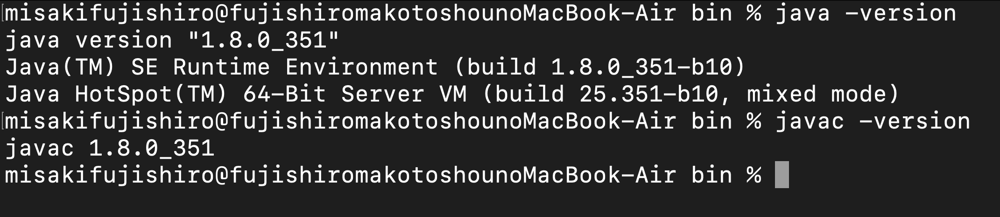
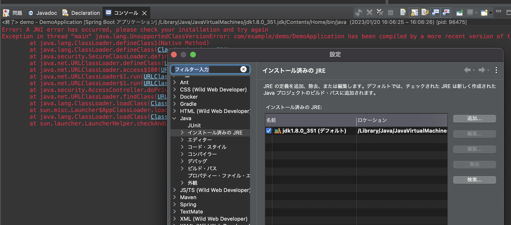

1. API GWとLambdaを利用したサーバーレスSpringアプリケーション¶
アプリケーション開発では、リクエストを受け付けるAppやサーバーが必要になるが、 それらを意識することなく、最小限どのプログラムでAppの実行環境を構築するサーバーレス開発を API GWとLambdaを利用して実装する。
塾長の記事AWSで作るクラウドネイティブアプリケーションの基本を実する。
ソースコードはgithubのものを参考にする
1.1. PJ構築¶
1.2. App実装（Spring Cloud Function）¶
1.3. Lambdaの設定¶
1.4. API GWの設定¶
1.5. トラブルシューティング¶
1.5.1. PJの始め方がわからない。。。¶
TerasolunaのTutorial では、mvn archeytpe:generate コマンドでPJを作成していたので今回もそれを踏襲して、pomを更新することにしたが、方針として正しいのか。
% mvn archetype:generate -B\
-DarchetypeGroupId=org.terasoluna.gfw.blank\
-DarchetypeArtifactId=terasoluna-gfw-web-blank-archetype\
-DarchetypeVersion=5.7.0.RELEASE\
-DgroupId=org.debugroom\
-DartifactId=mynavi-sample-aws-lambda\
-Dversion=0.0.1-SNAPSHOT
STSにて、以下の手順でarchetypeで作成したプロジェクトを選択する。
[File] -> [Import] -> [Maven] -> [Existing Maven Projects] -> [Next]
pom.xmlの以下の部分をgithubからコピーするとエラーが発生
変更前
<properties>
<project.build.sourceEncoding>UTF-8</project.build.sourceEncoding>
<maven.compiler.source>1.7</maven.compiler.source>
<maven.compiler.target>1.7</maven.compiler.target>
</properties>
<dependencies>
<dependency>
<groupId>junit</groupId>
<artifactId>junit</artifactId>
<version>4.11</version>
<scope>test</scope>
</dependency>
</dependencies>
変更後
<properties>
<java.version>1.8</java.version>
<spring-cloud.version>Greenwich.RC2</spring-cloud.version>
</properties>
<dependencies>
<dependency>
<groupId>org.springframework.cloud</groupId>
<artifactId>spring-cloud-function-web</artifactId>
</dependency>
<dependency>
<groupId>org.springframework.cloud</groupId>
<artifactId>spring-cloud-function-adapter-aws</artifactId>
</dependency>
<dependency>
<groupId>com.amazonaws</groupId>
<artifactId>aws-lambda-java-events</artifactId>
<version>2.0.2</version>
</dependency>
<dependency>
<groupId>com.amazonaws</groupId>
<artifactId>aws-lambda-java-core</artifactId>
<version>1.1.0</version>
</dependency>
<dependency>
<groupId>org.projectlombok</groupId>
<artifactId>lombok</artifactId>
<optional>true</optional>
</dependency>
<dependency>
<groupId>org.springframework.boot</groupId>
<artifactId>spring-boot-starter-test</artifactId>
<scope>test</scope>
</dependency>
</dependencies>
エラー

少し調べたが、javaのパスに関する記事ができてた。 バージョンは Java1.8でmvnも同じはず
javaのバージョン
% java -version
openjdk version "1.8.0_292"
OpenJDK Runtime Environment (AdoptOpenJDK)(build 1.8.0_292-b10)
OpenJDK 64-Bit Server VM (AdoptOpenJDK)(build 25.292-b10, mixed mode)
mvnのバージョン
% mvn -v
Apache Maven 3.8.6 (84538c9988a25aec085021c365c560670ad80f63)
Maven home: /opt/homebrew/Cellar/maven/3.8.6/libexec
Java version: 1.8.0_292, vendor: AdoptOpenJDK, runtime: /Library/Java/JavaVirtualMachines/adoptopenjdk-8.jdk/Contents/Home/jre
Default locale: ja_JP, platform encoding: UTF-8
OS name: "mac os x", version: "10.16", arch: "x86_64", family: "mac"
1.5.2. Run on Serverができない。¶
Spring Initializerでプロジェクトを作成したが、Run on Serverでエラーが発生。
Spring InitializerからPJを作成して、チュートリアル通り設定

STSのバージョンが３なので、Spring Boot Versionは3.0.１を設定。

run on serverするとエラーが発生

stackoverflowで同じエラーを見つけたが、 PropertiesからProject FacetsにDynamic Web ModuleとJava1.8を追加したが同じエラーが出る。。。
1.5.3. jdkとjreの設定したけど。。。¶

